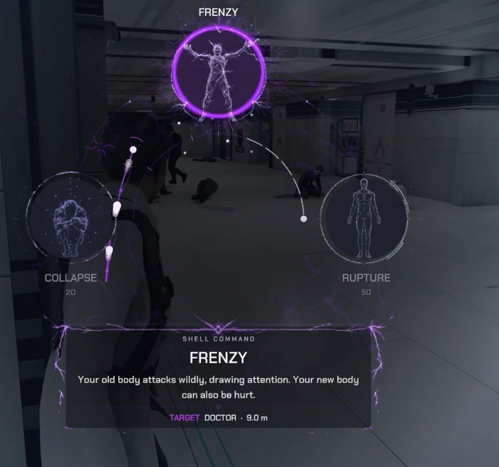
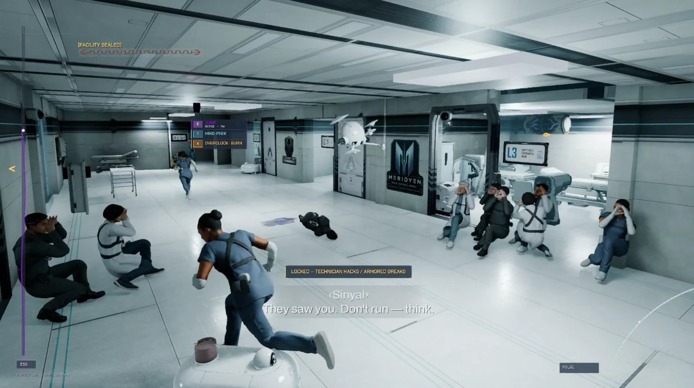
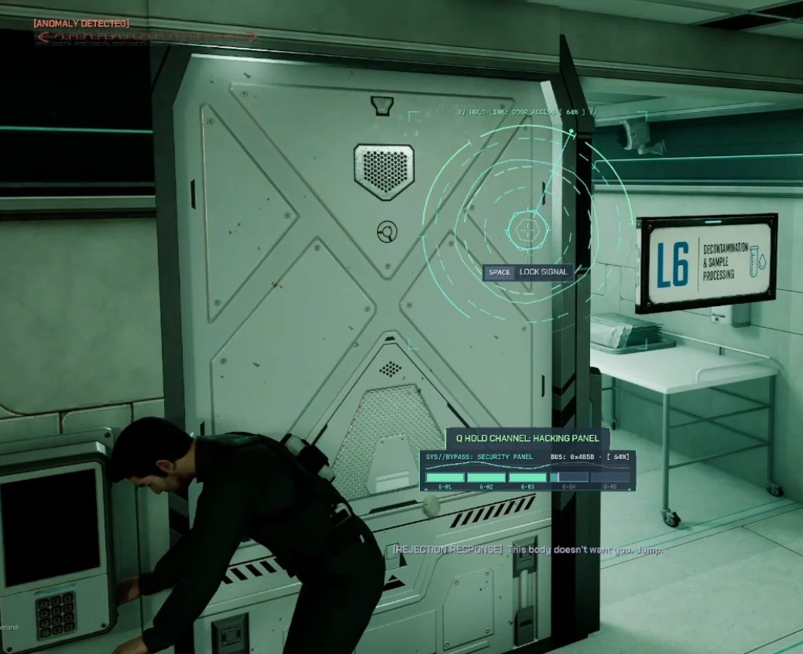
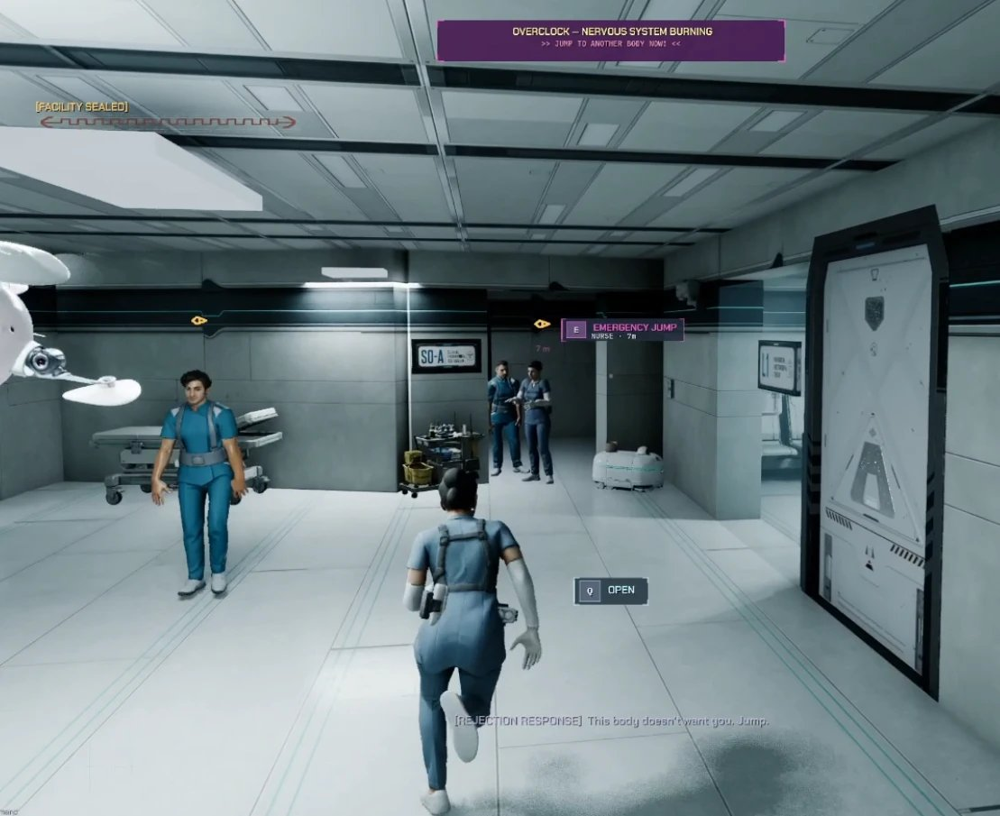
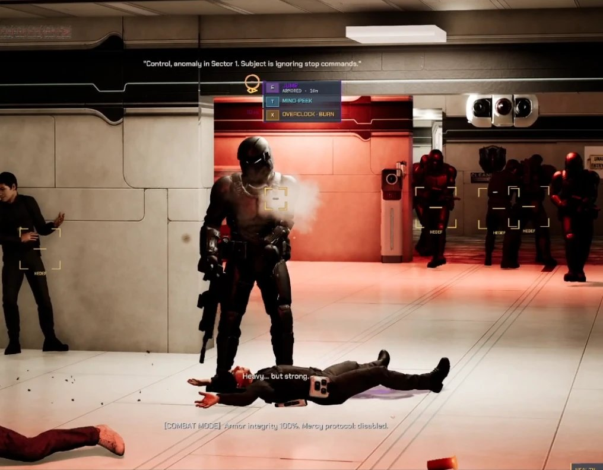
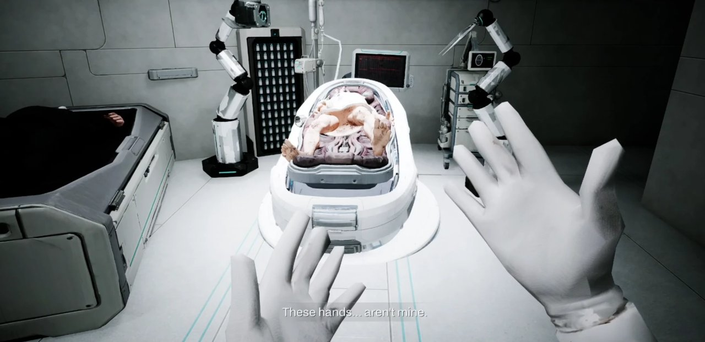
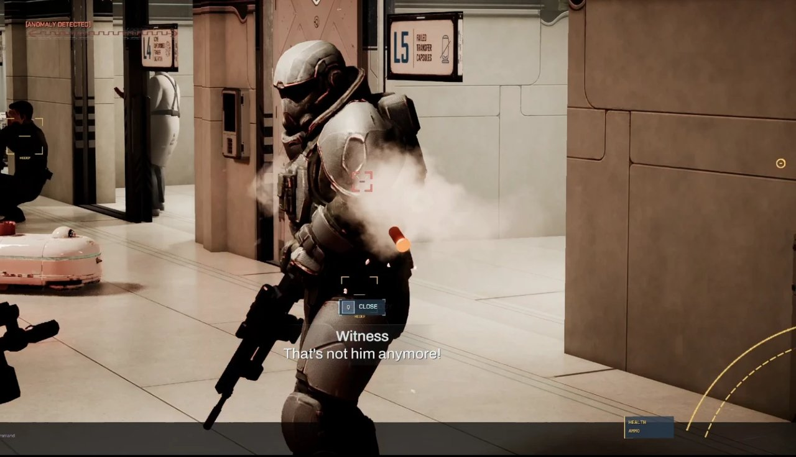
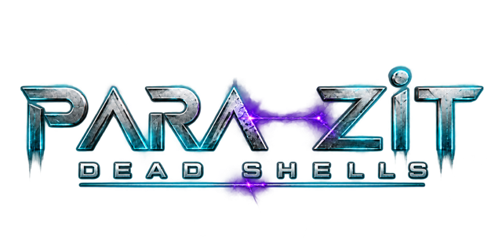
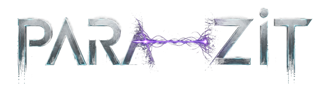
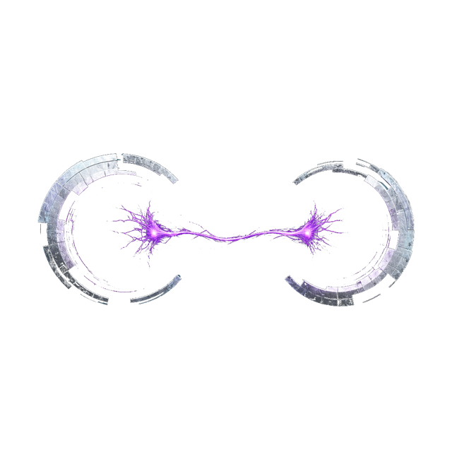

Press kit
Parazit: Dead Shells
Everything on this page may be used for coverage of the game. Download it all at once: parazit-presskit.zip (logos, key art and 7 screenshots, about 4 MB).
- Title
- Parazit: Dead Shells (Turkish: Parazit: Ölü Kabuklar)
- Developer
- YenidunyaWorks — independent, created & developed by Ö. YENİDÜNYA
- Genre
- Third-person fluid stealth
- Engine
- Unreal Engine 5.8
- Platform
- PC (Steam)
- Status
- In active development · pre-alpha
- Demo target
- Steam Next Fest, 22 February 2027
- Release date
- To be announced
- Languages
- English & Turkish, with voice-over in both
- Website
- yenidunyaworks.com
- Social
- X / @parazitgame
Short description
When you die, it doesn't end. It continues in someone else.
Parazit: Dead Shells is a third-person stealth game about a bodiless consciousness that survives by jumping between living bodies in the middle of a fight. Every body you take gives you its identity, its access, its weapon and its function, along with its limits. The shell you leave behind drops where it stands and stays there as evidence, and a body someone watched you enter is a body nobody trusts again.
A failed consciousness-transfer experiment kills Subject 07, but his mind survives. As Misafir, the Guest, he escapes into Karya, a near-future city where the wealthy buy continuity beyond death and the poor sell access to their own bodies.
- Jump. Take a body within range; the shell you abandon becomes a trail for whoever is hunting you.
- Read. A technician's clearance, a guard's weapon, the room a nurse can walk into — the route follows the body.
- Spend. Bodies wear down, get recognised and get hunted. Knowing when to leave matters as much as where to go next.
Video
Pre-Alpha Gameplay Reel
Work in progress — footage from active development · open on YouTube
 Watch gameplay
1 min 20 sec · with sound · pre-alpha
Watch gameplay
1 min 20 sec · with sound · pre-alpha
Screenshots
In-game frames
Taken directly from the game, interface included and untouched. Click a frame for the full-size file. Development is ongoing and the look may change.














Logos & art
Logos and key art
Logos are transparent PNGs designed for dark backgrounds.







Key art: AI-assisted promotional artwork, not an in-game frame.
Contact
Press contact
For interviews, review builds, demo keys or additional material, get in touch.